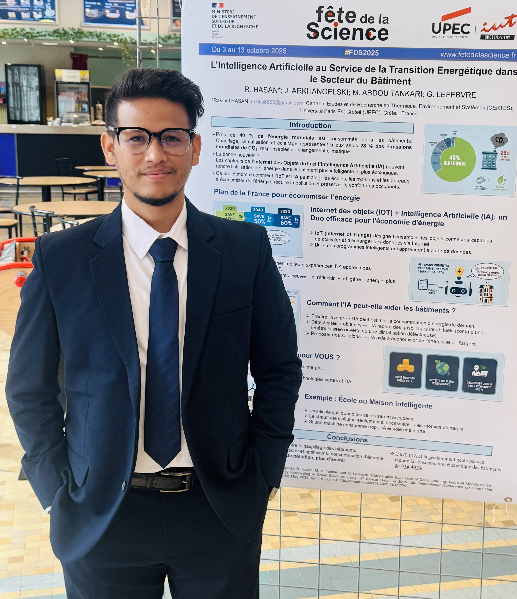

CERTES Laboratory, Université Paris-Est Créteil (UPEC)
Visiting Doctoral Researcher, Free University of Bozen-Bolzano (UNIBZ)
Developing data-driven, Edge-Cloud AI solutions to optimize building energy consumption, implement peak shaving strategies, and ensure regulatory compliance (Décret Tertiaire) for sustainable smart infrastructure.

Designing decentralized architectures for smart building energy management to overcome latency and bandwidth constraints of traditional cloud IoT platforms.
Developing hybrid deep learning models (LSTM + Interpolation architectures) optimized for irregular, multi-sensor environmental and consumption datasets.
Implementing data auditing frameworks for building load optimization, peak shaving, and adherence to European/French environmental regulations.
"Interpretable Multi-Sensor Fusion for Short-Term Energy Consumption Forecasting," Energies, vol. 19, no. 9, 2026.
"Benchmarking Deep Learning Architectures for 24-Hour Energy Forecasting in Smart Buildings Using Real-World IoT Data," Artificial Intelligence Research and Applications, 2026.
"Comparative Evaluation of Deep Learning-Based AI Models for 24-Hour Energy Forecasting in Smart Buildings Using IoT Sensor Data," in Proc. icSmartGrid, Glasgow, UK, 2025.
Designing proactive building energy management models, developing custom hybrid deep learning systems, and executing energy audits for compliance.
Collaborating with the Intelligent Networks and Systems group to build distributed Edge-Cloud configurations for high-efficiency IoT processing.
Constructed an Akima Spline Interpolation + LSTM pipeline, enhancing multi-sensor failure prediction and signal processing accuracies.